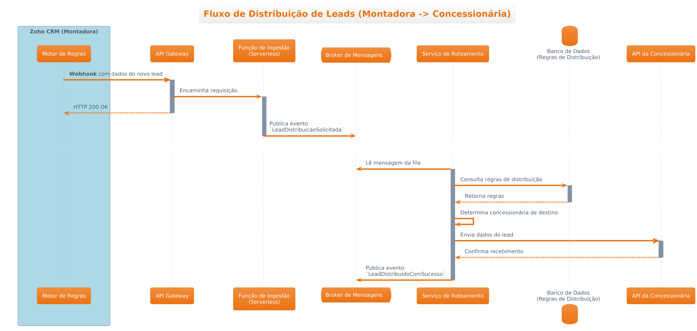
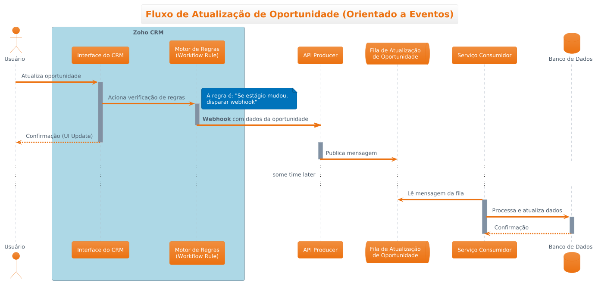

Documento de Fluxo de Dados
Este documento detalha os fluxos de dados para as principais integrações do sistema, conforme definido no ADR-001: Escolha da Arquitetura Híbrida. A arquitetura utiliza uma abordagem orientada a eventos para garantir desacoplamento, resiliência e escalabilidade.
1. Fluxo de Distribuição de Leads (Montadora -> Concessionária)
Este fluxo descreve como um novo lead capturado no Zoho CRM da montadora é automaticamente distribuído para o CRM de uma concessionária.
Diagrama de Referência:
/diagramas/sequencial/fluxo-distribuicao-leads.puml

Passos do Fluxo:
-
Origem (Zoho CRM):
-
Um novo lead é criado ou atribuído à montadora no Zoho CRM.
- Gatilho: Um Webhook configurado no Zoho CRM é acionado pelo evento de criação/atualização do lead.
-
Gateway de Ingestão (Função Serverless):
-
O Webhook envia uma requisição HTTP POST para um endpoint de API exposto por uma Função Serverless (ex: AWS Lambda + API Gateway).
- Esta função é responsável por:
- Validação Inicial: Verifica a autenticidade da requisição (ex: usando um segredo compartilhado).
- Transformação Mínima: Converte o payload do webhook em um formato de evento padronizado (ex: CloudEvents).
- Publicação: Publica o evento
LeadDistribuicaoSolicitadaem um tópico específico no Broker de Mensagens (ex: RabbitMQ).
-
Broker de Mensagens (RabbitMQ/Kafka):
-
O evento é recebido e enfileirado de forma durável, garantindo que não seja perdido mesmo que os serviços consumidores estejam temporariamente indisponíveis.
-
Serviço de Roteamento de Leads (Consumidor):
-
Um microserviço ou função serverless consumidor assina o tópico
LeadDistribuicaoSolicitada. - Ao receber um evento, este serviço executa a lógica de negócio principal:
- Análise e Enriquecimento: Consulta o banco de dados do portal ou outras fontes para obter as regras de distribuição (ex: por região geográfica, por produto, etc.).
- Seleção da Concessionária: Determina para qual concessionária o lead deve ser enviado.
- Transformação de Dados: Mapeia os campos do lead do formato da montadora para o formato esperado pelo CRM da concessionária de destino.
-
Destino (CRM da Concessionária):
-
O Serviço de Roteamento realiza uma chamada de API (REST/SOAP) para o endpoint do CRM da concessionária, enviando os dados do lead.
- O CRM da concessionária processa a requisição e cria o novo lead.
-
Atualização de Status (Feedback Loop):
-
Após a confirmação da criação do lead no CRM da concessionária, o Serviço de Roteamento pode, opcionalmente, publicar um novo evento, como
LeadDistribuidoComSucesso. - Este evento pode ser consumido por outros serviços para, por exemplo, atualizar o status do lead no portal web, notificando que ele foi enviado com sucesso.
2. Fluxo de Atualização de Oportunidade
Este fluxo descreve como uma atualização de oportunidade realizada no Zoho CRM dispara um processo assíncrono e orientado a eventos para replicar a mudança em um sistema externo. A arquitetura utiliza webhooks, uma API produtora e um sistema de filas para garantir o desacoplamento e a resiliência.
Diagrama de Referência:
/diagramas/sequencial/fluxo-atualizacao-oportunidade.puml

Etapas do Fluxo:
- Início no CRM: O processo começa quando um Usuário modifica uma oportunidade diretamente na interface do Zoho CRM.
- Gatilho do Motor de Regras: A ação do usuário aciona o Motor de Regras interno do CRM (configurado como uma Workflow Rule). Esta regra é configurada para monitorar alterações específicas, como a mudança de estágio de uma oportunidade.
- Disparo do Webhook: Uma vez que a condição da regra é satisfeita, o CRM dispara um Webhook. Trata-se de uma notificação HTTP POST enviada para um endpoint externo, contendo os dados da oportunidade que foi atualizada. Este processo é assíncrono, permitindo que a interface do CRM confirme a ação para o usuário imediatamente, sem aguardar o processamento final.
-
Recepção e Enfileiramento: O webhook é recebido pela API Producer. Este é um serviço leve cuja responsabilidade é:
-
Validar a chamada do webhook (ex: checar tokens de segurança).
- Formatar os dados recebidos em uma mensagem padronizada.
- Publicar a mensagem na Fila de Atualização de Oportunidade.
- Processamento Assíncrono: O Serviço Consumidor, um componente independente que monitora constantemente a fila, detecta e lê a nova mensagem.
- Atualização da Base de Dados: O Consumidor processa a mensagem, aplica qualquer lógica de negócio necessária e, por fim, atualiza as informações no Banco de Dados central do sistema de destino.
Vantagens desta Arquitetura:
- Desacoplamento: O Zoho CRM não precisa saber nada sobre a arquitetura do sistema de destino. Sua única responsabilidade é enviar uma notificação para um endereço web.
- Resiliência: Se o Serviço Consumidor ou o banco de dados estiverem temporariamente indisponíveis, as mensagens se acumulam na fila e são processadas assim que o serviço for restaurado, evitando a perda de dados.
- Escalabilidade: Se o volume de atualizações aumentar, é possível adicionar mais instâncias do Serviço Consumidor para processar as mensagens da fila em paralelo.